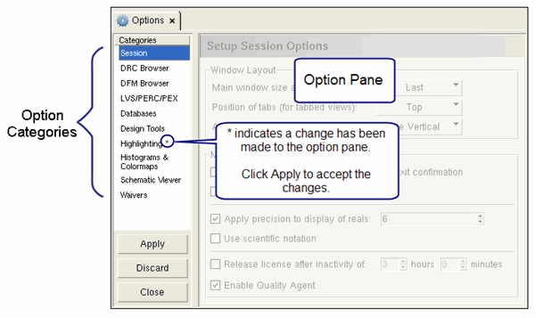

Options Tab in Calibre RVE
Access with: Setup > Options, or by clicking
the options icon 
The Options tab displays option settings for Calibre RVE. Individual option panes are selected from a list of categories on the left panel.
Description
An asterisk by the pane name means that a setting has been changed but not applied. Click Apply to have the change take effect.
Figure 1. Calibre RVE Options Tab

Fields
Category |
Reference Section |
|---|---|
Session |
|
DRC Browser |
|
DFM Browser |
|
LVS/PERC/PEX |
|
Databases |
|
Design Tools |
|
Highlighting |
|
Histograms and Colormaps |
|
Schematic Viewer |
|
Waivers |